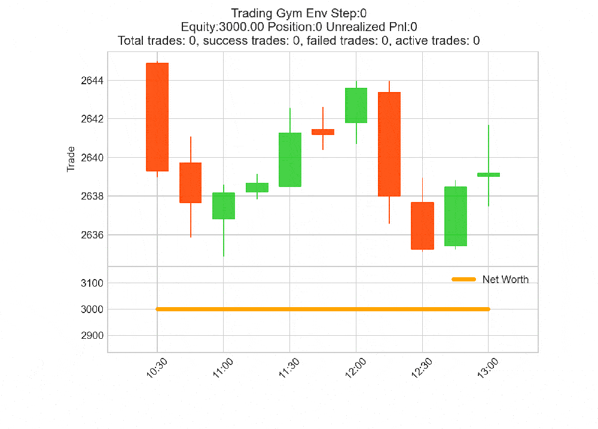

Gym 交易环境¶
QTrade 提供一个 Gymnasium 环境（qtrade.env.TradingEnv），它包装的是和 Backtest 同一个 Broker。agent 一次推进一根 bar；账户逻辑、成交语义、SL/TP 行为完全一致 —— 只是用 step() 驱动而不是 Python 循环。
自定义 action / observation / reward 见自定义交易环境。
初始化¶
import yfinance as yf
from qtrade.env import TradingEnv
from qtrade.core.commission import PercentageCommission
data = yf.download(
"GC=F",
start="2022-01-01",
end="2024-01-01",
interval="1d",
multi_level_index=False,
)
# Indicators added to the DataFrame become observable features by default.
data['Rsi'] = data['Close'].pct_change().rolling(14).mean() # placeholder for ta.rsi
data['Diff'] = data['Close'].diff()
data.dropna(inplace=True)
env = TradingEnv(
data=data,
cash=3000,
commission=PercentageCommission(0.001),
window_size=10, # observation lookback (also defines warmup)
max_steps=400, # max bars per episode
random_start=False, # start at index `window_size`
trade_on_close=True, # market orders fill at current bar's close
)
默认的 ObserverScheme 返回除 OHLCV 之外所有列的 (window_size, n_features) 窗口。所以你加到 DataFrame 上的指标会自动变成观测特征。
step API¶
env.step(action) 返回标准 5 元组：
obs, reward, terminated, truncated, info = env.step(action)
字段 |
含义 |
|---|---|
|
|
|
|
|
当且仅当 |
|
当且仅当 |
|
字典（见下文）。 |
terminated 或 truncated 变 True 时，broker 自动调用 close_all_positions() —— episode 在返回前已「结算」。
info 里有什么？¶
每一步包含：
键 |
含义 |
|---|---|
|
|
|
|
|
|
|
带符号的 |
|
本 episode 至今已平仓交易数。 |
|
所有已平仓交易 |
|
平均 |
|
|
如需额外字段（持仓中交易数、当前回撤、特定交易属性），继承 TradingEnv 并重写 step 来扩展这个 dict。
Episode：terminated vs truncated¶
Gymnasium 的约定是：
terminated：episode 到达自然终点（胜、负或可用状态耗尽）。truncated：episode 被人为时间限制截断。
在 TradingEnv 里：
terminated在数据用完时触发（current_step == len(data) - 1）。Episode 「完整结束」。truncated在达到max_steps时触发。Episode 本可以继续，但你设置了预算。
stable-baselines3 的值函数 bootstrap 对二者处理不同 —— 把 max_steps 设得短到大多数 episode 是 truncate（让 agent 从多个短 episode 学），但不能短到策略没机会展开。
random_start 增加 episode 多样性¶
默认 random_start=False：每个 episode 都从 bar 索引 window_size 开始。random_start=True 时，每次 reset() 在 [window_size, len(data) - max_steps) 范围随机选起点，让 episode 采样不同的市场 regime。
前置条件：len(data) > window_size + max_steps。不满足时构造函数抛出清晰的 ValueError —— 保持 max_steps < len(data) - window_size 留余地。
典型训练循环¶
from stable_baselines3 import PPO
model = PPO("MlpPolicy", env, verbose=1)
model.learn(total_timesteps=200_000)
obs, _ = env.reset(seed=42)
for _ in range(400):
action, _ = model.predict(obs, deterministic=True)
obs, reward, terminated, truncated, info = env.step(action)
if terminated or truncated:
break
env.show_stats()
env.plot()
env.show_stats() 和 env.plot() 行为和 Backtest 实例完全一致 —— 相同指标、相同的多面板 Bokeh 报告 —— 因为底层都委托给同一个 Broker。
渲染¶
env.render('human') 打开一个 mplfinance 实时蜡烛图，每步更新：

RGB 数组输出（用于 SB3 的 VecVideoRecorder 等）：
env = TradingEnv(..., render_mode='rgb_array')
frame = env.render() # → ndarray of shape (h, w, 3)
注意：渲染很慢。训练时关闭它（
render_mode='human'是默认值，但你不必调用render()），只在评估时渲染。
常见坑¶
稀疏奖励：默认奖励只在有交易平仓的 bar 触发。长 episode 没有平仓很难训练。要么用基于权益的奖励（见自定义交易环境），要么缩短 episode 让结尾的自动平仓提供规律信号。
指标开头有 NaN：你加到
data上的列会被原样观测。观测里出现 NaN 会让大多数策略崩溃。计算指标后用data.dropna(inplace=True)丢掉热身行。Action / observation 漂移：实验中途换 scheme 后加载旧模型会形状不匹配。打算后续加载的模型和对应的 scheme 一起保存。